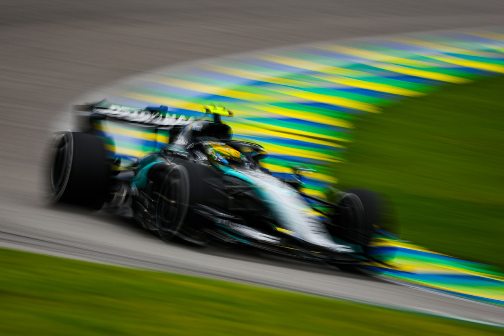

O jovem piloto italiano Kimi Antonelli (Mercedes) sagrou-se este domingo campeão mundial de Fórmula 1, ao garantir matematicamente o título no Grande Prémio da Cidade do México. Aos 20 anos, o prodígio transalpino tornou-se o campeão mundial mais jovem da história da categoria máxima do automobilismo.
Link artigo F1

Kimi Antonelli
Lando Norris conquistou a pole-position do Grande Prémio do Brasil neste sábado, em Interlagos. O piloto da McLaren registou 1min27s470 à frente de George Russell da Mercedes, por 0s204, enquanto Kimi Antonelli ficou em terceiro lugar. Marcada pelas condições de chuva no circuito paulista. Apesar de Russell ter terminado a sessão na segunda posição, o piloto britânico perderá cinco lugares na grelha de partida devido a uma penalização pela troca do motor de combustão interna.

Kimi Antonelli em São Paulo
Com isto, Antonelli, terceiro classificado na qualificação, deverá assumir um lugar na primeira linha ao lado de Norris. Charles Leclerc garantiu o quarto posto para a Ferrari, seguido por Liam Lawson, da Racing Bulls, e Nico Hülkenberg, da Audi. Isack Hadjar colocou a Red Bull no sétimo lugar, enquanto Oliver Bearman, Fernando Alonso e Alexander Albon completaram o top dez. Hamilton e Verstappen também enfrentam penalizações relacionadas com a substituição de componentes das respetivas unidades motrizes, o que poderá alterar significativamente as suas posições de partida para a corrida de domingo.
Classificções da Temporada 26/27